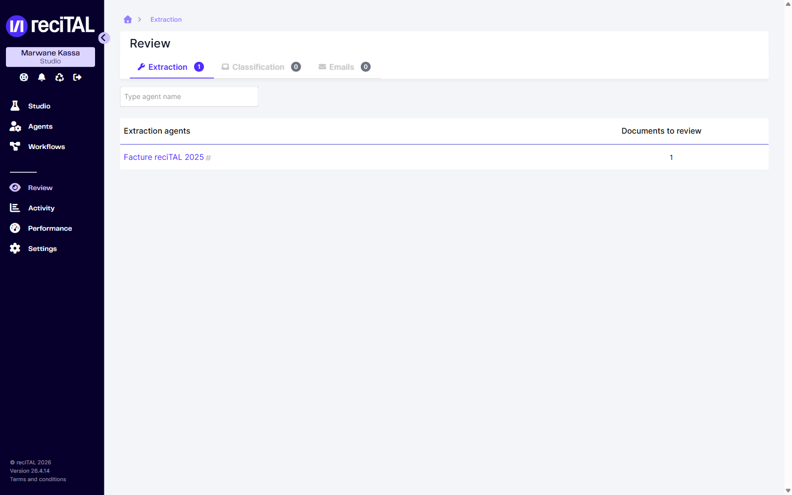
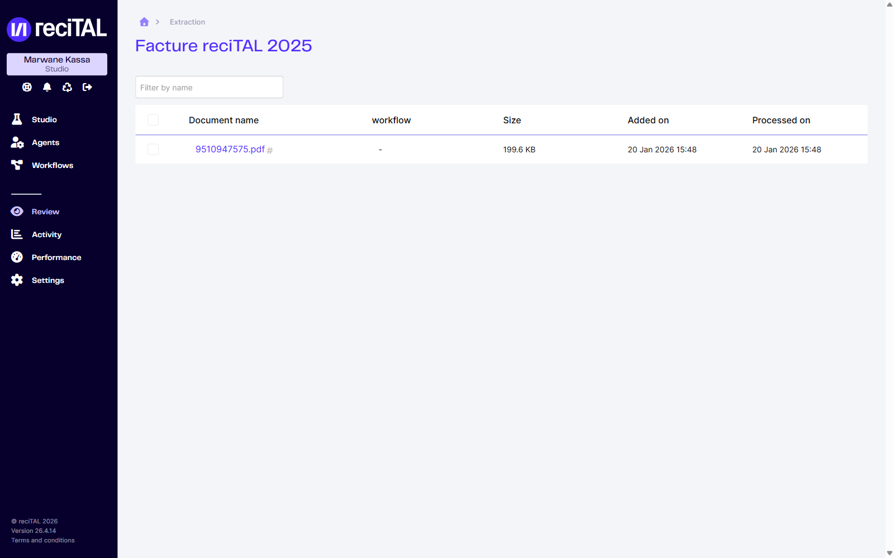
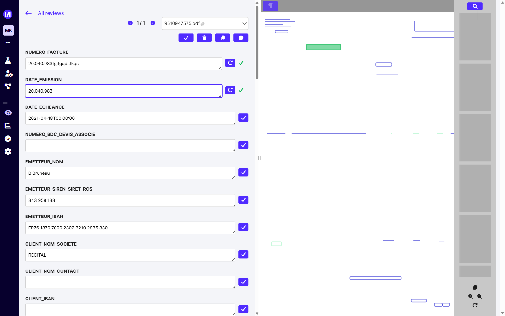
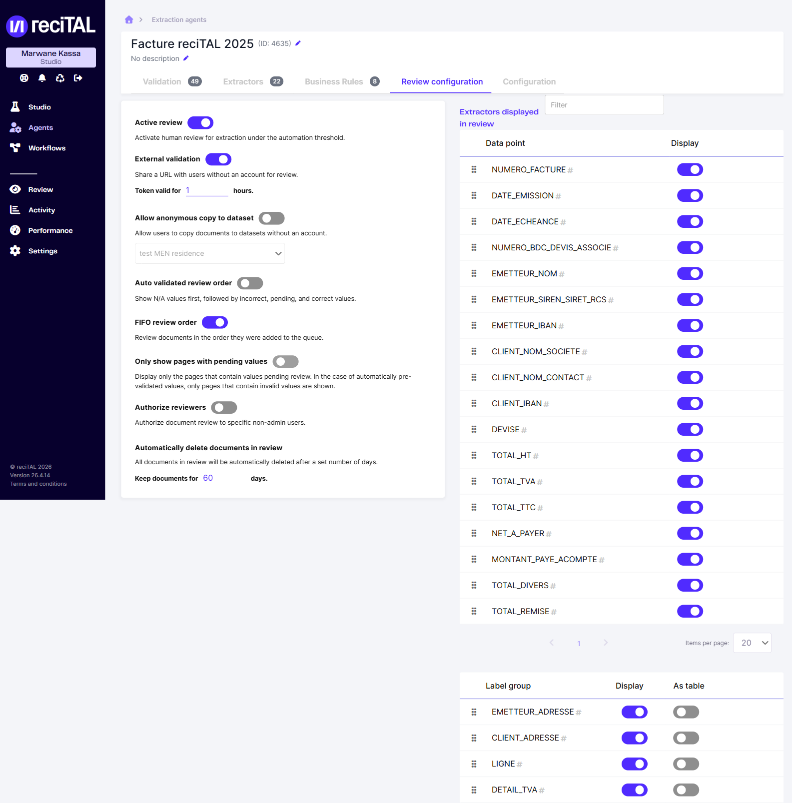

Ce document présente l'écran de Review (correction / vidéocodage) de la Suite reciTAL
et explique, étape par étape, comment vérifier et valider les données extraites par les agents,
puis comment autoriser et configurer la review au niveau d'un agent.
reciTAL · Mode opératoire à destination des équipes métier · Basé sur la Suite v26.4 · Juin 2026
Sommaire
1. Présentation
1.1 À quoi sert l'écran Review
1.2 Comment un document arrive en Review
2. Accès et organisation
2.1 Les trois onglets
2.2 La liste des agents
2.3 Les documents d'un agent
3. L'écran de correction
3.1 Vue d'ensemble
3.2 Naviguer entre les documents
3.3 La barre d'actions
3.4 Vérifier et corriger les champs
3.5 Groupes et sous-groupes
3.6 Le visualiseur de document
4. Copier dans un dataset
5. Autoriser et configurer la review depuis un agent
5.1 Les options de la review
5.2 Les extracteurs affichés
6. Rôles et permissions
7. Pour aller plus loin
1. Présentation
1.1 À quoi sert l'écran Review
L'écran Review est l'espace de correction humaine de la Suite reciTAL. Il regroupe tous les
documents et emails dont l'extraction ou la classification automatique nécessite une vérification avant
validation finale, organisés par agent. C'est ici que l'opérateur :
vérifie et corrige les données extraites par les modèles en production ;
valide un document une fois les contrôles résolus, ce qui le fait sortir de la file ;
écarte un document non conforme (hors périmètre, illisible, incomplet) ;
enrichit un dataset à partir d'un document mal extrait, pour améliorer les extractions futures.
1.2 Comment un document arrive en Review
La vérification se fait au document. La review se paramètre par agent (voir §5) : lorsque l'option
Active review est activée, la correction humaine s'applique aux extractions situées sous le seuil d'automatisation.
Une fois un document vérifié et validé, le document suivant de la file est proposé automatiquement.
Tant qu'ils ne sont pas traités, les documents restent dans la file de l'agent.
2. Accès et organisation
2.1 Les trois onglets
Dans la barre de navigation, cliquer sur Review. L'écran est segmenté en trois onglets selon le type de tâche :
Extraction — documents passés par un agent d'extraction avec des champs à vérifier ;
Classification — documents dont la classe prédite est en revue ;
Emails — emails à classifier.
Le badge de chaque onglet indique le nombre d'éléments en attente. Le champ de recherche filtre les agents par nom.
2.2 La liste des agents
Chaque ligne correspond à un agent et au nombre de documents en attente. Cliquer sur le nom d'un agent ouvre sa file.

Onglet Extraction de Review : la liste des agents et leur nombre de documents à corriger.
2.3 Les documents d'un agent
La file d'un agent liste ses documents à corriger avec leur nom, le workflow d'origine, la taille,
la date d'ajout et la date de traitement. Les cases à cocher permettent une sélection multiple,
et le champ Filter by name filtre la liste. Cliquer sur le nom d'un document ouvre l'écran de correction.

Les documents en attente de correction pour l'agent sélectionné.
3. L'écran de correction
3.1 Vue d'ensemble
L'écran de correction est divisé en deux zones : à gauche, les champs extraits à vérifier ;
à droite, le document affiché page par page avec ses zones détectées. Les boutons d'action sont
regroupés en haut de la colonne de gauche.

Écran de correction : champs à gauche, document et zones détectées à droite.
3.2 Naviguer entre les documents
All reviews ramène à la file de l'agent.
Les flèches ‹ / ›, le compteur (ex. 1 / 1) et le menu déroulant du nom de fichier permettent
de passer d'un document à l'autre sans quitter l'écran de correction.
3.3 La barre d'actions
Quatre boutons sont disponibles en haut de la colonne des champs :
Bouton
Action
Validate
Valide le document et l'envoie. Il quitte la file ; le document suivant s'affiche.
Discard
Écarte le document (hors périmètre, illisible, non conforme…).
Copy to dataset
Copie l'intégralité du document dans un dataset Studio.
Add comment
Ajoute un commentaire au document.
3.4 Vérifier et corriger les champs
Chaque champ extrait s'affiche dans une zone de saisie éditable, sous le nom de son extracteur
(NUMERO_FACTURE, EMETTEUR_NOM, TOTAL_TTC…).
✓ Mark as reviewedLe bouton (coche) marque la valeur du champ comme vérifiée.
⟳ Revert to extracted valueApparaît quand une valeur a été modifiée : restaure la valeur initialement extraite par le modèle.
Pour corriger une valeur, modifier directement le texte dans la zone de saisie.
3.5 Groupes et sous-groupes
Les données répétables sont regroupées : par exemple LIGNE pour les lignes de facture,
EMETTEUR_ADRESSE, DETAIL_TVA. Chaque sous-groupe peut être déplié, complété, ajouté via
Add subgroup ou supprimé, afin de refléter le nombre réel d'occurrences présentes dans le document.
3.6 Le visualiseur de document
La colonne de droite affiche le document et ses zones détectées. Les outils disponibles :
Outil
Fonction
Show detected text (icône ¶, haut gauche)
Affiche ou masque le texte détecté par l'OCR en surimpression.
Recherche (loupe, haut droite)
Recherche dans le texte du document.
Miniatures des pages (colonne de droite)
Aperçu des pages du document.
Zoom + / − et rotation (bas droite)
Ajustent l'affichage et l'orientation pour faciliter la lecture.
Add page to dataset (bas droite)
Ajoute la page courante à un dataset (voir §4).
4. Copier dans un dataset
Lorsqu'un document présente trop d'écarts, l'ajouter à un dataset permet d'enrichir l'entraînement et
d'améliorer les extractions futures sur ce format. Deux actions distinctes existent :
Copy to dataset (barre d'actions) — copie le document entier ;
Add page to dataset (visualiseur, en bas à droite) — copie la page affichée.
L'ajout d'une page ouvre une fenêtre où l'on sélectionne le dataset cible. L'option Generate labels and
prefill annotations from the extraction models associated with the extraction agent pré-remplit les annotations
de la page à partir des modèles d'extraction de l'agent, ce qui accélère l'annotation côté Studio.
✕
Add page to dataset
Select a dataset to copy page to :
Select dataset⌄
Generate labels and prefill annotations from the extraction models associated with the extraction agent
CANCELSAVE
Fenêtre Add page to dataset : choix du dataset cible et option de pré-remplissage des annotations.
5. Autoriser et configurer la review depuis un agent
La review se paramètre par agent, depuis l'onglet Review configuration de l'agent d'extraction
(Agents → [agent] → Review configuration). C'est ici que l'on autorise la review et que l'on règle son comportement.

Onglet Review configuration : activation, validation externe, ordre de traitement et extracteurs affichés.
5.1 Les options de la review
Option
Effet
Active review
Active la correction humaine pour les extractions sous le seuil d'automatisation. Interrupteur principal : sans lui, aucun document de l'agent n'est envoyé en Review.
External validation
Génère une URL partageable permettant à des utilisateurs sans compte de corriger un document. Le jeton est valable un nombre d'heures configurable (Token valid for … hours).
Allow anonymous copy to dataset
Autorise ces utilisateurs externes à copier des documents vers un dataset (à sélectionner), sans compte.
Auto validated review order
Affiche d'abord les valeurs N/A, puis les valeurs incorrectes, en attente et correctes.
FIFO review order
Traite les documents dans leur ordre d'arrivée dans la file.
Only show pages with pending values
N'affiche que les pages contenant des valeurs à vérifier (en pré-validation automatique, seules les pages avec valeurs invalides sont montrées).
Authorize reviewers
Réserve la correction des documents de l'agent à des utilisateurs non-administrateurs spécifiques.
Automatically delete documents in review
Supprime automatiquement les documents en review au bout d'un nombre de jours défini (Keep documents for … days).
5.2 Les extracteurs affichés
Le tableau Extractors displayed in review liste tous les data points de l'agent ; la colonne Display
détermine, pour chacun, s'il apparaît sur l'écran de correction — on limite ainsi la correction aux seuls champs pertinents.
Le tableau Label group gère de la même façon les groupes (LIGNE, EMETTEUR_ADRESSE…) :
Display pour l'afficher, As table pour le présenter sous forme de tableau plutôt qu'en sous-groupes empilés.
À noter — les autres paramètres de l'agent (verrouillage, OCR, traitement, normalisation)
se trouvent dans l'onglet Configuration.
6. Rôles et permissions
Dans Paramètres → Users, chaque utilisateur porte un rôle. Les rôles présents incluent
Reviewer (utilisateur non-administrateur) et Orgadmin (administrateur de l'organisation).
L'option Authorize reviewers d'un agent permet de réserver sa file à des utilisateurs
non-administrateurs désignés. La gestion des comptes et des rôles se fait depuis le module Paramètres.
7. Pour aller plus loin
Ce manuel décrit l'écran de Review tel qu'il se présente dans la Suite reciTAL (v26.4). Pour les sujets connexes :
la documentation en ligne reciTAL (sections Production → Review, Activité, Performance, Paramètres) ;
la constitution et l'annotation des datasets côté Studio, pour exploiter les pages copiées depuis la Review ;
l'équipe support reciTAL pour toute question liée aux accès et aux rôles.